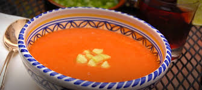

Cold tomato soup

Description
This cold tomato soup, also called gazpacho (it's Spanish) can be cooked without a stove. It is
a summery dish and easy to make. You will enjoy it!
Ingredients
- About 2 pounds ripe red tomatoes, cored and roughly cut into chunks
- 1 Italian frying (cubanelle) pepper or another long, light green pepper, such as Anaheim,
cored, seeded and roughly cut into chunks
- 1 cucumber, about 8 inches long, peeled and roughly cut into chunks
- 1 small mild onion (white or red), peeled and roughly cut into chunks
- 1 clove of garlic
- Some sherry vinegar
- Salt
- Olive oil
- Combine tomatoes, pepper, cucumber, onion and garlic in a blender or, if using a hand
blender, in a deep bowl. (If necessary, work in batches.) Blend at high speed until very
smooth, at least 2 minutes, pausing occasionally to scrape down the sides with a rubber
spatula.
- With the motor running, add the vinegar and 2 teaspoons salt. Slowly drizzle in the olive
oil. The mixture will turn bright orange or dark pink and become smooth and emulsified,
like a salad dressing. If it still seems watery, drizzle in more olive oil until texture
is creamy.
- Strain the mixture through a strainer or a food mill, pushing all the liquid through with
a spatula or the back of a ladle. Discard the solids. Transfer to a large pitcher (preferably
glass) and chill until very cold, at least 6 hours or overnight.
- Before serving, adjust the seasonings with salt and vinegar. If soup is very thick, stir
in a few tablespoons ice water. Serve in glasses, over ice if desired, or in a bowl.
A few drops of olive oil on top are a nice touch.
Recipe from NYT Cooking